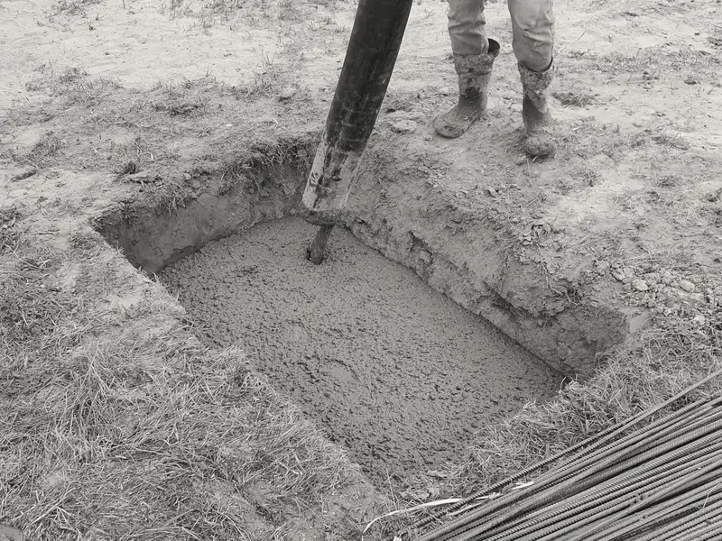
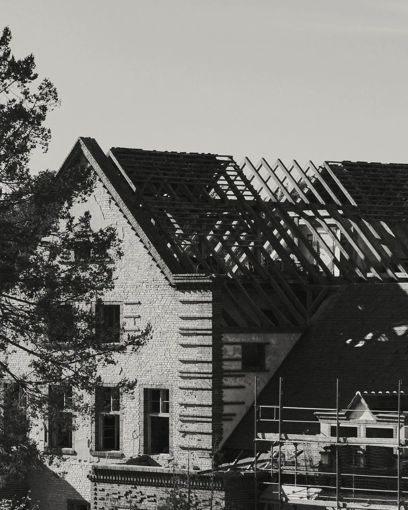
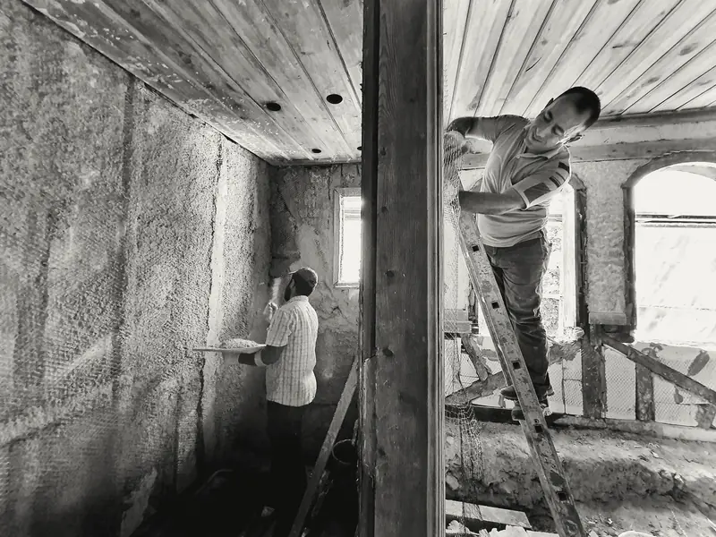
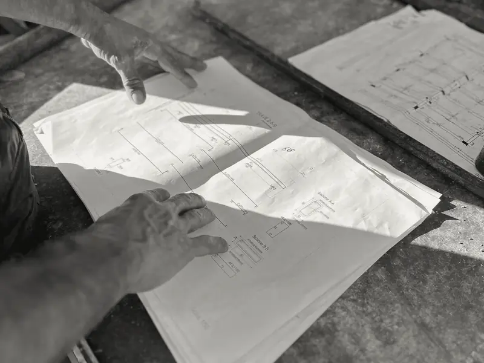
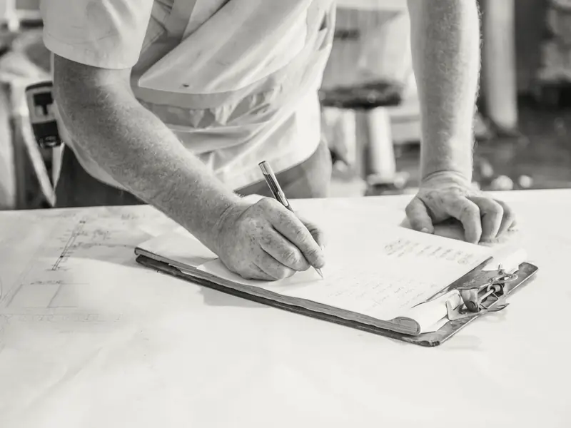
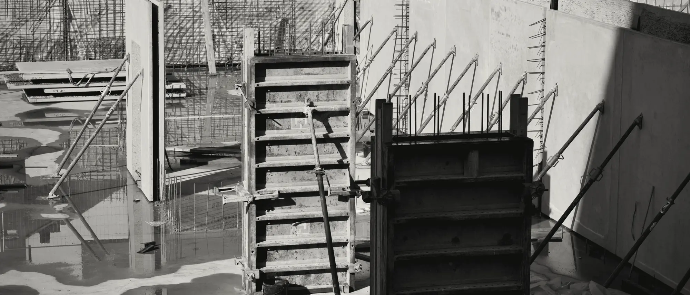
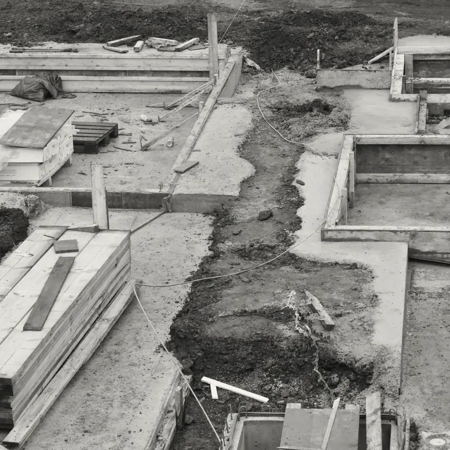
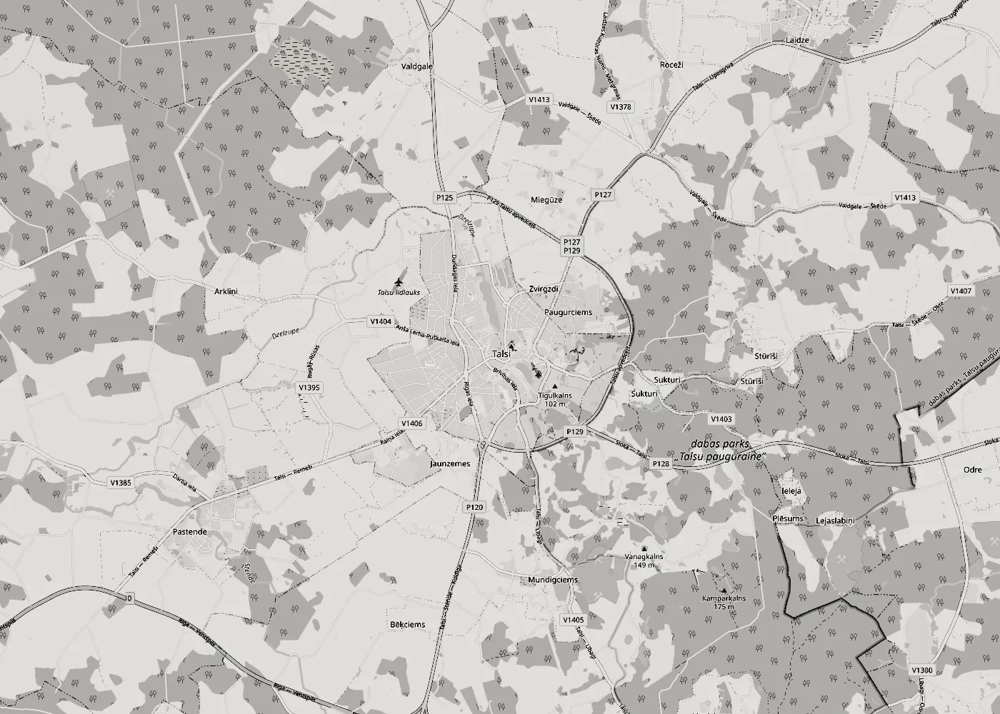

Ēku būvniecība
Dzīvojamās un saimniecības ēkas no pamatiem līdz jumtam: pamati, sienas, pārsegumi un jumts pēc projekta.
Būvniecība · Remonts · Būvuzraudzība
SIA „KLINTS BŪVE” no Talsiem būvē un atjauno ēkas, vada būvdarbus un uzrauga tos pasūtītāja interesēs. Pastāstiet par savu objektu, un mēs atbildēsim ar priekšlikumu.

Pakalpojumi
Būvējam, remontējam, vadām būvdarbus un veicam būvuzraudzību. Būvkomersantu reģistrā mūsu joma ir būvdarbu vadīšana un būvuzraudzība.

Dzīvojamās un saimniecības ēkas no pamatiem līdz jumtam: pamati, sienas, pārsegumi un jumts pēc projekta.

Esošu ēku un telpu remonts: konstrukciju atjaunošana, sienas, grīdas, griesti un apdare.

Organizējam darbus objektā: secību, brigādes, materiālu piegādes un termiņus. Kārtojam būvdarbu žurnālu un segto darbu aktus.

Pārstāvam pasūtītāju: pārbaudām, vai darbi atbilst projektam un normatīviem, pieņemam segtos darbus un fiksējam defektus.

Pamati, armatūra, hidroizolācija un inženiertīkli ir svarīgākie darbi būvē. Tos pieņemam ar aktu, pirms nākamais posms tos aizsedz.
Kā strādājam

Uzrakstiet vai piezvaniet: kas jābūvē vai jāremontē, kur atrodas objekts un kādā stadijā ir darbi. Ja ir projekts, pievienojiet to.
Apskatām objektu un iepazīstamies ar projektu, lai saprastu darbu apjomu un stāvokli.
Sagatavojam tāmi un darbu grafiku. Vienošanos nostiprinām līgumā.
Strādājam pēc grafika, segtos darbus pieņemam ar aktu, objektu nododam kopā ar dokumentiem.
Kur atrodamies
Mūsu juridiskā adrese ir Talsos. Ja objekts atrodas citur, uzrakstiet, kur tieši, un vienosimies.
Uzrakstīt
Kontakti
Kas jābūvē vai jāremontē, kur un kad. Atbildēsim ar priekšlikumu.